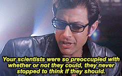

About Me

I was born at a very young age. My formative years included Legos, Star Wars, and an Apple //c with several shoe boxes full of 5 1/4" floppy disks with hand-written labels.
At around age 10, I began to explore programing. As an avid player of MUDs, an early, text-based predecessor to MMORPGs, I chose to learn C in order to create for a sci-fi MUD called Core. Around the same time, I began to explore HyperCard, especially inspired by the game Myst, which was built using HyperCard. And of course, with the release of the World Wide Web, I began to learn HTML.
I attended UC Santa Cruz, originally majoring in Computer Science, but at this time, my career took one of many turns. I found that the discussion taking place in Film & Digital Media courses I took had far more interesting discussions about the implications of the software platforms that were forming the social media landscape. These kinds of discussions weren't taking place in the computer science field, and everybody only seemed to care whether they could do things, not whether they should. So I changed majors to Film & Digital Media, with a production concentration.
I don't know what else to write. My life is a sad series of failures and dashed expectations from here and it depresses me. The world is trash, truth has gone out the window, nobody is rational and there's no money in fixing it.